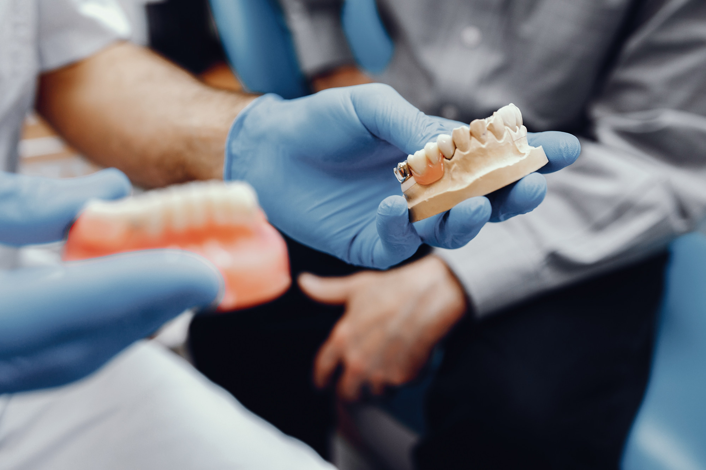

La carrera de Prótesis Dental te brinda las habilidades necesarias para diseñar, fabricar y mantener prótesis dentales funcionales y estéticas. Aprenderás a utilizar herramientas y tecnologías actuales, enfocándote en la precisión, calidad y estética dental. Esta carrera combina aspectos técnicos y detallados, preparándote para enfrentar los desafíos del cuidado dental en el mundo moderno.
Prótesis Dental
3 años
Profesional Técnico en Prótesis Dental
1. Aplicación de normas de bioseguridad y protocolos en la elaboración de prótesis y ortodoncia.
2. Uso de materiales y herramientas especializadas para la confección de dispositivos dentales.
3. Diseño y fabricación de prótesis dentales funcionales y estéticas.
Al culminar tu carrera podrás obtener las siguientes certificaciones